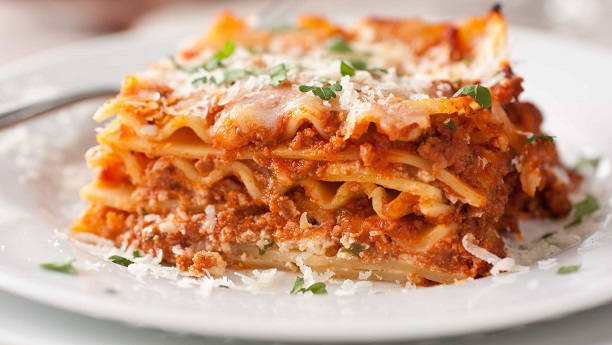

Lasagna

Description
This Easy Beef Lasagna is the easiest lasagna ever! There’s no need to boil noodles or slave away for hours over the stove for this recipe.
Its the perfect meal for a busy weeknight dinner. This is a classic Italian dish, one that is known nearly all over the world due to its addicting popularity.
Its warm and comforting with a savory rich sauce, ooey gooey cheese, and al dente layers of noodles.
Ingredients
- 1 pound ground beef
- 1 (26 ounce) jar RAGÚ® Old World Style® Traditional Sauce
- 1 (15 ounce) container ricotta cheese
- 2 cups shredded mozzarella cheese
- ½ cup grated Parmesan cheese, divided
- 2 large eggs
- 12 each lasagna noodles, cooked and drained
Steps
- Preheat oven to 375 degrees F. Brown ground beef in 12-inch skillet; drain. Stir in Pasta Sauce; heat through.
- Combine ricotta cheese, mozzarella cheese, 1/4 cup Parmesan cheese and eggs in large bowl.
- Evenly spread 1 cup meat sauce in 13 x 9-inch baking dish.
- Arrange 4 lasagna noodles lengthwise over sauce, then top with 1 cup meat sauce and 1/2 of the ricotta cheese mixture; repeat, ending with sauce
- Cover with aluminum foil and bake 30 minutes. Remove foil and sprinkle with remaining 1/4 cup Parmesan cheese.
- Bake uncovered an additional 5 minutes. Let stand 10 minutes before serving.